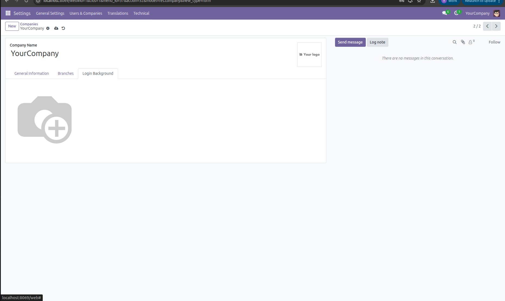
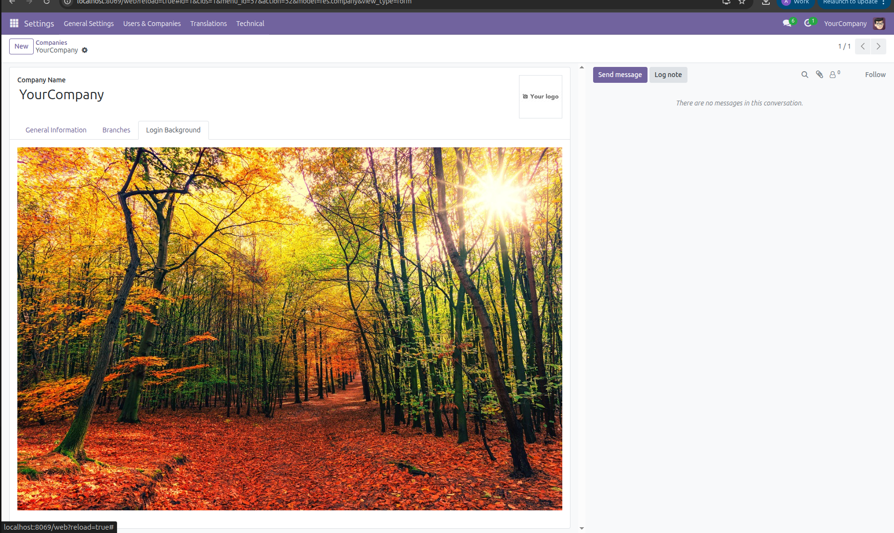
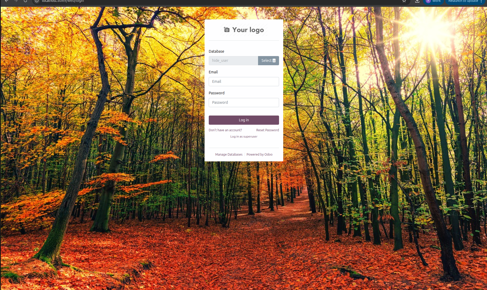

Professional Login Background Customization for Odoo 17, 18 & 19
Inom Dynamic Login Background Manager is a professional Odoo solution designed to enhance the visual experience of the Odoo login page by allowing administrators to configure and manage background images directly from the backend.
This module allows companies to customize the login screen with a professional background image without modifying any core Odoo files. The background image can be uploaded directly from the company settings, and it will automatically appear on the login page.
The module works seamlessly with Odoo 17, Odoo 18 and Odoo 19, making it a reliable and modern solution for businesses that want to improve the visual appearance of their Odoo environment.
The default Odoo login page provides a simple interface and does not allow easy background customization. Businesses often want their login page to reflect their brand identity and look more professional.
Inom Dynamic Login Background Manager solves this problem by allowing administrators to upload and manage login background images directly from the backend without requiring any technical configuration.
After installing the module, a new field called "Login Background" appears in the company settings where administrators can configure the background image for the login page.

Upload the desired background image in the Login Background field and click the Save button to apply the configuration.

After logging out and logging in again, the selected background image will appear on the Odoo login page.

For support, bug reports, or customization requests, please contact us:
Email: info@inomerp.in
We provide a one-time setup and installation service completely free of cost on any Odoo-supported server. Our experienced technical team ensures proper installation, configuration, and deployment so you can start using the module smoothly without any technical complications.
Free support is provided for issues caused by the standard Odoo source code related to this module.
Any issues arising due to third-party modules, custom developments, or compatibility conflicts are outside the scope of free support and may be chargeable.
For demos, customization, or enterprise support, connect with our team: